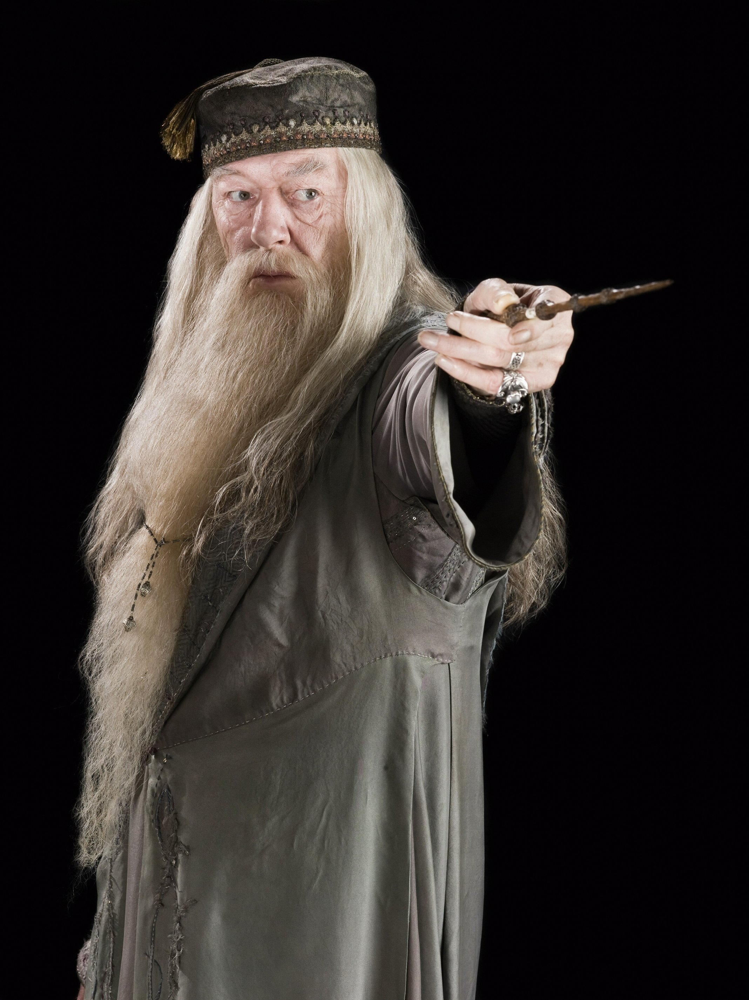

Harry James Potter (n. el 31 de julio de 1980), es un mago de sangre mestiza y el único hijo de James y Lily Potter. Es la única persona conocida que ha sobrevivido a la maldición de Avada Kedavra, haciéndolo en dos ocasiones. Ambas veces la maldición fue conjurada por Lord Voldemort. La primera, en un intento de matar a Harry durante su etapa de bebé, conlleva a la primera derrota de Voldemort y al final de la Primera Guerra Mágica. La segunda, (en la que a diferencia de la primera Voldemort logra matarlo efectivamente pero luego el niño revive) destruye una parte más del alma de Voldemort y lleva a su destrucción definitiva y al final de la Segunda Guerra Mágica.
[3] Harry Potter
Ronald "Ron" Bilius Weasley (n. 1 de marzo de 1980) es un mago sangre pura, el sexto y más joven hijo de Arthur y Molly Weasley. También era el hermano menor de Bill, Charlie, Percy, Fred y George, y el hermano mayor de Ginny. Ron y sus hermanos y hermana vivían en la Madriguera, en las afueras de Ottery St. Catchpole.
[4] Ronald Weasley
Hermione Jean Granger (n. 19 de septiembre de 1979) es una bruja hija de muggles. El Sr. y Sra. Granger son dentistas en el mundo muggle. A los once años descubrió su don mágico y fue aceptada en el Colegio Hogwarts de Magia y Hechicería. Hermione empezó sus estudios mágicos el 1 de septiembre de 1991, poco antes de cumplir doce años y fue seleccionada para la Casa Gryffindor . Posee una mente académica brillante, y demostró ser una estudiante superdotada.
[5] Hermione Granger
El profesor Albus Percival Wulfric Brian Dumbledore, (Orden de Merlín - Primera Clase, Gran Hechicero, Jefe de Magos del Wizengamot, Jefe Supremo), (n. 4 de marzo de 1881 - fl. 30 de junio de 1997) fue profesor de Transformaciones y más tarde director del Colegio Hogwarts de Magia y Hechicería. También se desempeñó como Jefe Supremo de la Confederación Internacional de Magos - (? - 1995) y como Jefe de Magos del Wizengamot (? - 1997). Era un mago de sangre mestiza, hijo de Percival y Kendra Dumbledore, y hermano mayor de Aberforth y Ariana Dumbledore. Su padre murió en Azkaban cuando Albus era joven, mientras que su madre y su hermana murieron más tarde en diversos accidentes. Sus pérdidas primerizas en gran medida le afectaron, incluso en su muerte, pero a su vez lo hicieron una mejor persona. Albus Dumbledore era considerado como el mago más poderoso de su época. Él era famoso por derrotar a Gellert Grindelwald, descubrir doce usos de la sangre de dragón, y su trabajo en alquimia con Nicolas Flamel.

[6] Albus Dumbledore
Draco Lucius Malfoy (n. 5 de junio de 1980) es un mago de sangre pura y el único hijo de Lucius y Narcissa Malfoy. Por ser el hijo de un mortífago, a Draco le enseñaron a creer firmemente en la importancia de la pureza de sangre. Asistió al Colegio Hogwarts de Magia y Hechicería desde 1991 hasta 1998 y fue seleccionado en la Casa Slytherin. Durante sus años en Hogwarts, se hizo amigo de Vincent Crabbe, Gregory Goyle, Pansy Parkinson y otros compañeros de Slytherin, mientras él rápidamente desarrolló una rivalidad con Harry Potter.

[7] Draco Malfoy